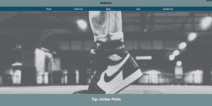

Assignments
Assignment 1 - Basic HTML
.png)
This is a very basic website about Lebron James using only html.
Assignment 2 - Basic CSS
.png)
This is a website about Loving Life that uses html and basic CSS skills.
Assignment 3 - Page Layout

I learned about flexboxes and applied them to this website to make it compatible with small screens.
Assignment 4 - Recreate CSS

I honed in on my html and CSS skills and recreated a UofSC webpage
Assignment 5 - Intro to JavaScript

I was introduced to javascript and used this knowledge to create a counter, apage refresher, and working slider
Assignment 6 - Javascript If Statements
I was introduced to javascript if statements and used this to create a toggle nav as well as a color slider that prints different words and changes the color as you move the slider. As well as 3 buttons that control the size of a picture.
Assignment 7 - Javascript For Loops
I was introduced to javascript for loops and used it to create the user inputted amount of stars.
Assignment 8 - Javascript Associative Arrays
I was introduced to javascript associative arrays and used this knowledge to load in a table of images with associating words that appear on click of each table element.
Assignment 9 - Javascript Associative Arrays
I was introduced to javascript classes and used them to create data and have it be inputted onto the page.
Assignment 10 - JSON parsing
I was introduced to JSON parsing and used a json file to get ice cream flavors and the data associated with it. I was able to use javascript to manipulate my page and load this data into the site.
Assignment 11 - Intro to NodeJS
I was introduced to NodeJS and created a server side hello world using render.com
Assignment 12 - Intro to React
I was introduced to React and created a HelloWorld react app.
Project
Part 1 - Topic Selection
.png)
My project is called ShoeSaver and it is used by sneaker resellers to keep track of their inventory.
Part 2 - WireFrames

I made a wireframe and it takes you through my vision of the final site.
Part 3 - Html and CSS
I created the majority of the html and css for my project.
Part 4 - Color,Pictures,and Text
I finalized all of the content on the pages, excluding forms. I also changed code to make the site more functional and user friendly on different screen sizes.
Part 5 - HTML and CSS finalization
I recieved peer and teacher recommendations that enhanced my page. I added background images on the About Us and Shop page. I added more information and restructured the About Us page and did other small enhancements.
Part 6 - JSON parsing
I learned how to parse JSON files and I used javascript to load data into the home and shop pages.
Part 7 - Contact Form
I learned how to use an api key to create a contact form and allow website users to email me if they have questions
Part 8 - React and GitHub Pages
I learned how to use React and transferred all of the HTML and CSS into React. I also published this page onto Render.
Server Side GitHub
Render Server Side
Client Side Github
Render Client Side
Part 9 - Post Server Requests
I learned how to use React to create post requests to a server. I also learned how to use a server to store data and retrieve it. As well as validating the data with Joi.
Server Side GitHub
Render Server Side
Client Side Github
Render Client Side